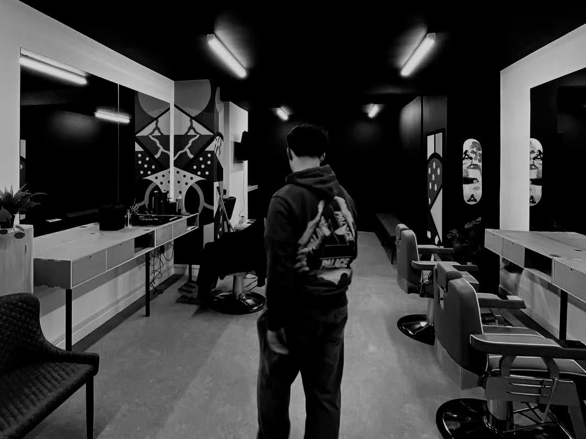

Wishing you all another Merry Christmas and a Happy New Year. We hope this card finds you prosperous and content.
Here in Wolverhampton we have had spirits lifted by the balmy autumn weather helping us push on with projects that have spent much of the year water logged. This year's card hopes to take us from the Indian Summer to a Narnian Winter, so we can enjoy a crisp, snow smothered landscape worthy of the festive season.

Card design ingredients are a photograph of a snowy day in 2010, combined with the Letraset gift recycled from last year, channelled through a blatant rip off of the fantastic work of Maxim Peter Griffin1 and his book Field Notes.
We hope you'll find somewhere handy to hang it.
Musical accompaniment (this year's gift) is provided by an extract ofThe Sounds of Christmas by Christian Marclay.2
After beginning the year with an excess of sitting down thanks to a frankly unfair health mishap3, the close of 2024 has been the opposite with packed days and deadlines hunting in packs.
A review of the year's photos highlights how the calendar has been dominated by the probably never ending house refurb project. The imminent removal of a year and half's worth of scaffolding will be our Christmas treat.
Thanks to everyone who has pitched in to help, or just patiently listened to Sarah and I stress about it in the pub. I have optimistically installed a plaque that suggests we'll be finished in 20254. Place your bets and tune in this time next year.

Progress will be slowed due to staff shortages however, as the in-house builder is off to begin his new venture. Josh's barbershop opened this month after a manic 2 week fit out and we couldn't be prouder of what he's achieved.
All male acquaintances are fully expected to henceforth visit Elbanna Barbershop when needing a hair cut.
Meanwhile, graduating top of her class after successfully capturing and counting those pesky diatoms in an academically rigorous, correctly Harvard referenced manner; Josie is now a fully fledged forensic scientist, working in a lab in Coventry.
The commute isn't great, but support from her employer for a 4 day week with an early start and late finish is helping avoid the worst traffic. It should be the future for everyone!5
Walks, gigs, cities and theatre should also be the future for everyone. Thanks to all who have travelled with us near and far.
We continue to be grateful for the outdoors, the arts and the pub.

Highlights of the year to be heartily recommended include the once volcanic ridges of Shropshire, the resurgence of punk bands like The Chats, paying to stand in a freezer in Amsterdam and drama in dramatic locations.
Have a fantastic 2025, look after each other and keep in touch. May your winter be cozy and your spring be well sprung.

Rob, Sarah, Josh and Josie.
December 19th 2024
{kind=link}
{kind=link}
{kind=link}
{kind=link}
{kind=link}
{kind=link}
{kind=link}
{kind=link}
{kind=link}
{kind=link}
{kind=link}